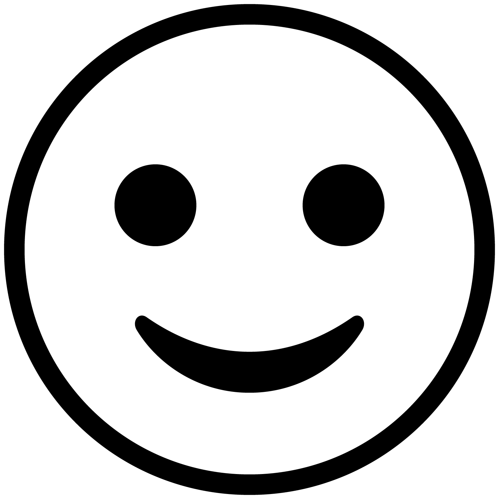
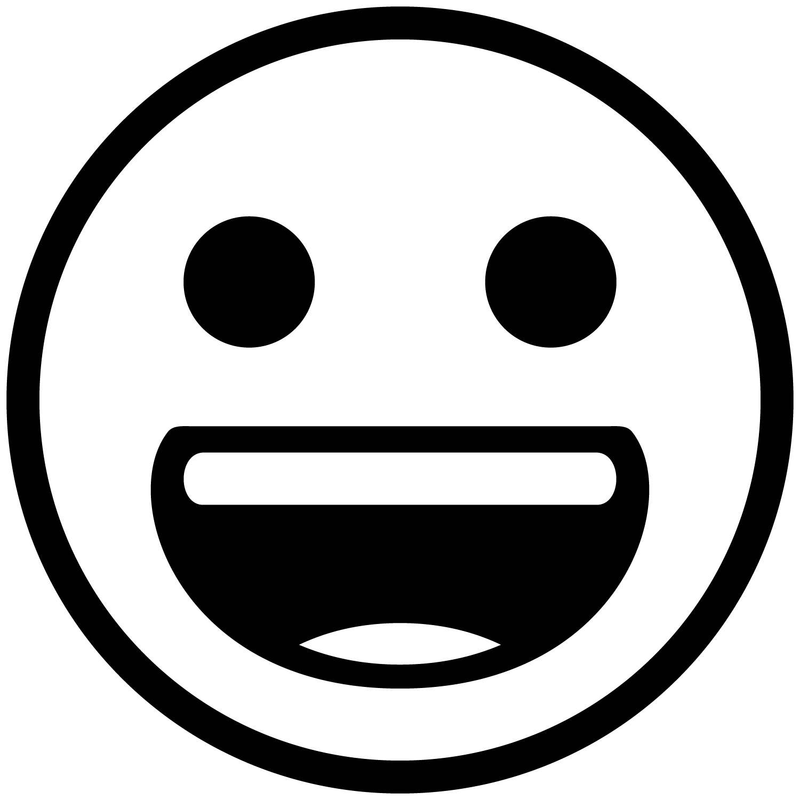
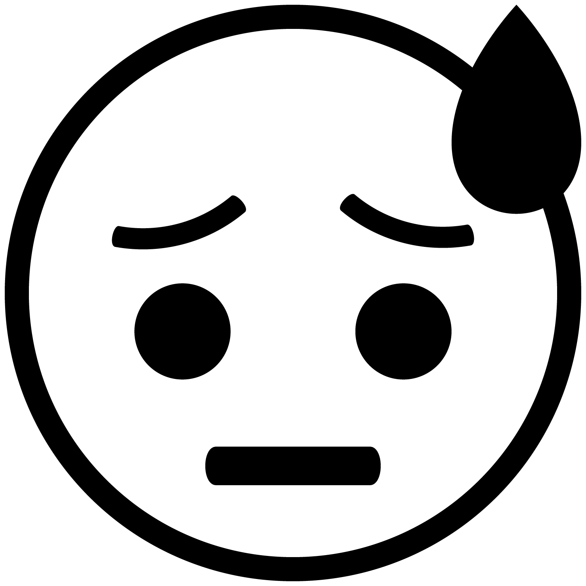
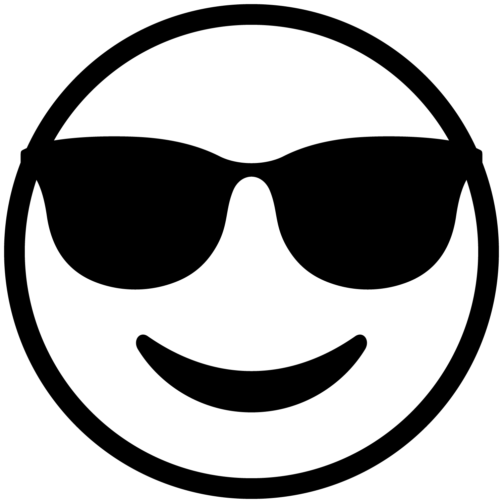
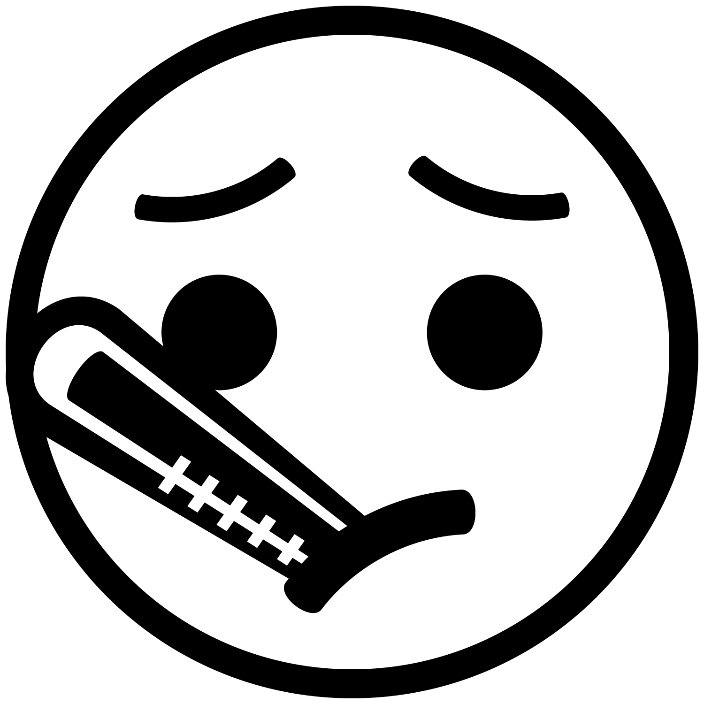
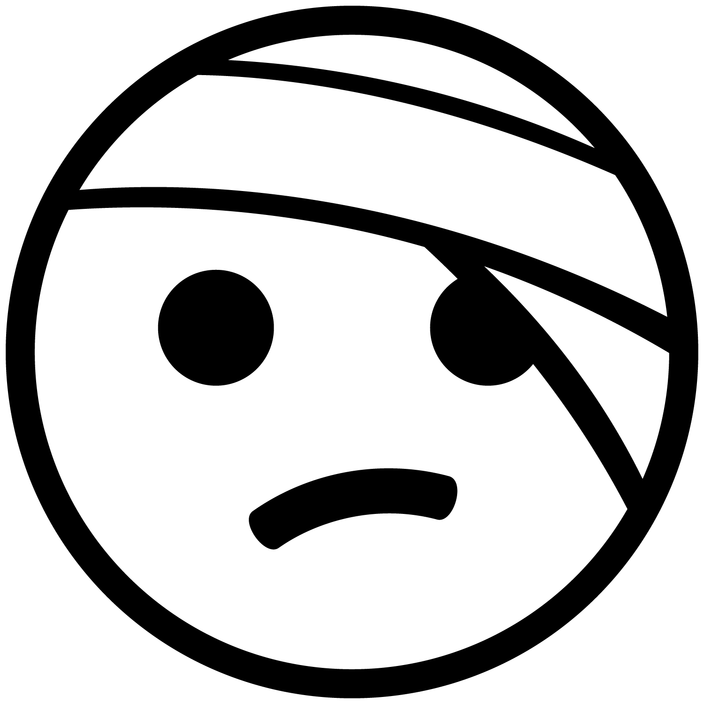
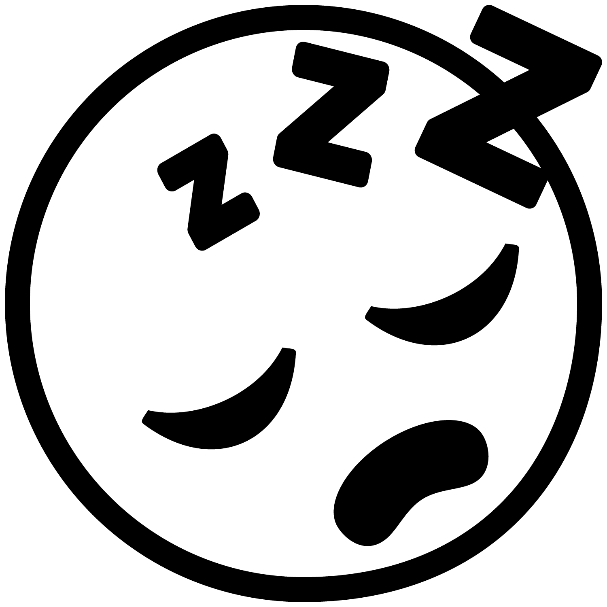
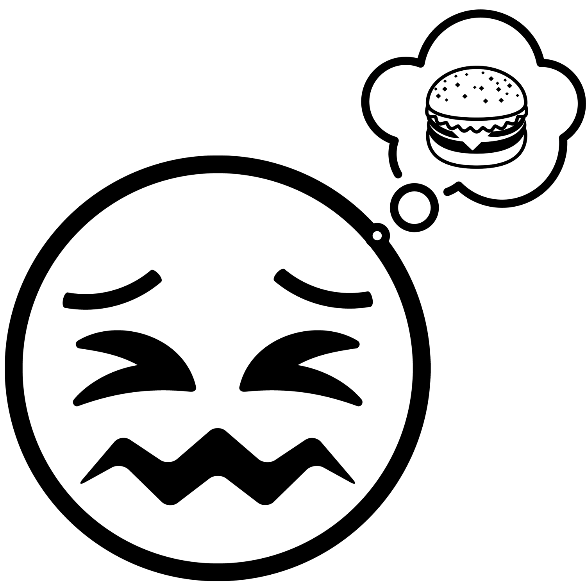
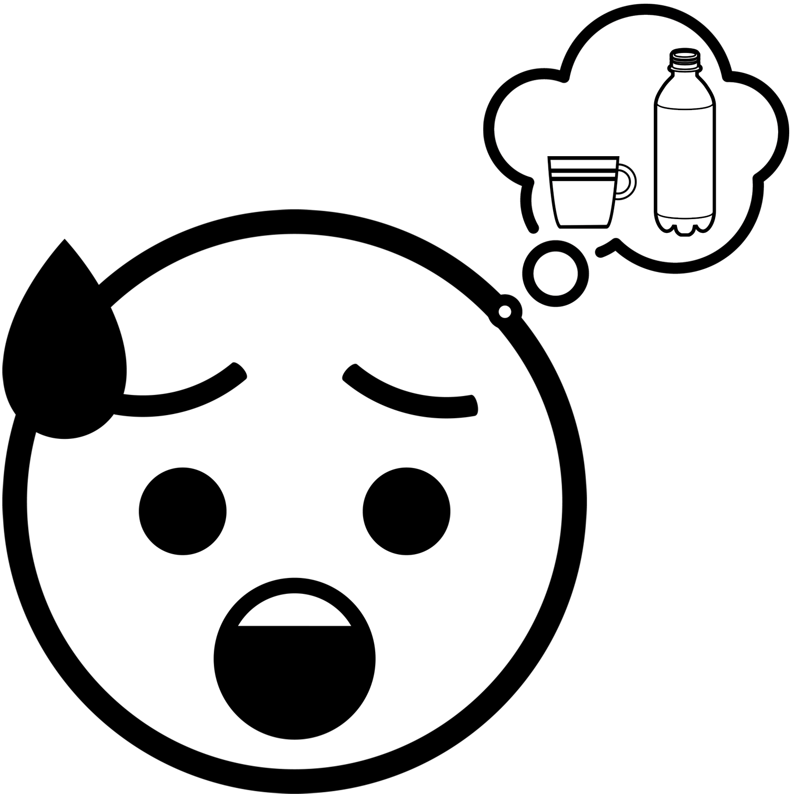

How are you feeling?
The SSBMI Language Department created "feelings" posters which you can use to learn how to ask "How are you?" and share your own feelings in Nisenan and Northern Sierra Miwok. Here, you can learn how to say the language on these posters and other useful phrases.
You can ask how someone is feeling using one of the following phrases. Note that, when speaking Nisenan or Miwok, you use different language depending on whether you are asking 1 person or a group of people how they feel:
English
How are you?
(said to 1 person)
Nisenan
Homáabe mi?
Miwok
Kucí’’acin aa?
Esak’ábe mi? (Do you know?) There are many different ways to ask "How are you?" in Nisenan and Miwok. For example, you may also hear Nisenan speakers ask Homáakani? (How are you?). The Miwok phrase that we share here, Kucí’’acin aa?, more literally means "Are you well?", but you can also ask someone Micɨ́ksɨs? (How are you?) which is also used as a greeting.
You can respond in any of a number of ways. For example, here are some phrases that you might use to share how you feel in Nisenan or Miwok:

I am good.
Nisenan
Wenném ni.
Miwok
Kucít.

I am not good.
Nisenan
Wennemením ni.
Miwok
Kucí’wat.

I am happy.
Nisenan
Kɨɨpém ni.
Miwok
Apóoyum.
I am unhappy/sad.
Nisenan
Kɨɨpemením ni.
Miwok
Eyáhŋem.
I am angry.
(said by a woman)
Nisenan
Hont’owím ni.
Miwok
Osá’ŋem.
I am angry.
(said by a man)
Nisenan
Əəním ni.
Miwok
Naŋá’ŋem.

I am scared/nervous.
Nisenan
Bɨɨk’ɨ́m ni.
Miwok
Yɨtɨ́ttɨttɨm.

I am healthy/well.
Nisenan
Wadáam ni.
Miwok
Kucí’’acit.

I am sick.
Nisenan
Wamayím ni.
Miwok
Halɨ́yŋem.

I am hurt.
Nisenan
K’ɨɨt’ím ni.
Miwok
Sikéenɨm.
I am tired.
Nisenan
Helúum ni.
Miwok
Ṭánŋem.

I am sleepy.
Nisenan
Yɨk’ɨk’ɨ́m ni.
Miwok
Yáŋ’eksɨm.

I am hungry.
Nisenan
Ok’óm ni.
Miwok
Hakáyŋem.

I am thirsty.
Nisenan
Mowoonóm ni.
Miwok
Heléwŋem.
.png){kind=link}